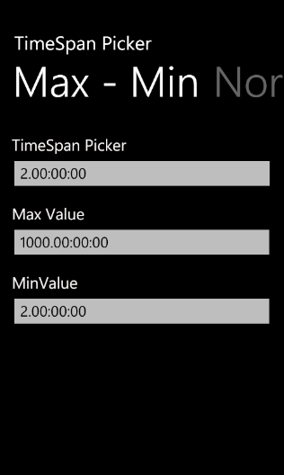
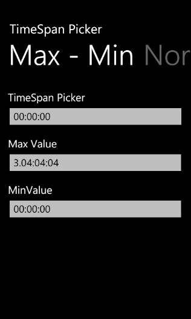
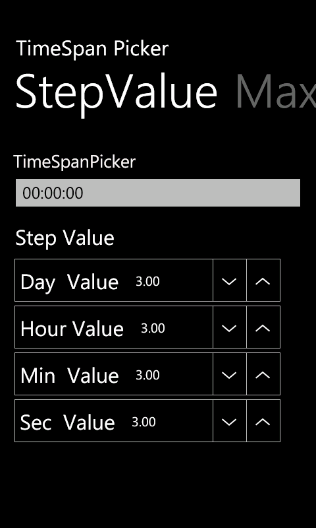

This feature enables you to set the minimum and maximum timespan range and the step value.
Setting the Minimum TimeSpan Range
You can set the minimum timespan range using the MinValue property. Default value is 0 timespan.
The following code illustrates how to set the minimum timespan range:
|
[xaml] <syncfusion:TimeSpanPicker x:Name="timespanpicker" Text="TimeSpanPicker" ValueStringFormat="dd:hh:mm:ss" MinValue="2.0:0:0" FormatString="True"/> |
|
[C#]
TimeSpanPicker timespanpicker= new TimeSpanPicker(){ Text="TimeSpanPicker", ValueStringFormat="dd:hh:mm:ss", MinValue=new TimeSpan(2,0,0,0), FormatString=true}; |

Figure 79: Customized Minimum Value
Setting the Maximum TimeSpan Range
You can set the maximum timespan range using the MaxValue property. Default value is 1000 days.
The following code illustrates how to set the maximum timespan range:
|
[xaml] <syncfusion:TimeSpanPicker x:Name="timespanpicker" Text="TimeSpanPicker" ValueStringFormat="dd:hh:mm:ss" MaxValue="3.4:4:4" FormatString="True"/> |
|
[C#] TimeSpanPicker timespanpicker= new TimeSpanPicker(){ Text="TimeSpanPicker", ValueStringFormat="dd:hh:mm:ss", MaxValue=new TimeSpan(3,4,4,4), FormatString=true}; |

Figure 80: Customized Maximum Value
Setting the Step Value
You can set the step value using the StepValue property. Default value is 1.
The following code illustrates how to set the step value:
|
[xaml] <syncfusion:TimeSpanPicker x:Name="timespanpicker" Text="TimeSpanPicker" ValueStringFormat="dd:hh:mm:ss" StepValue="3.3:3:3" FormatString="True"/> |
|
[C#] TimeSpanPicker timespanpicker= new TimeSpanPicker(){ Text="TimeSpanPicker", ValueStringFormat="dd:hh:mm:ss", StepValue=new TimeSpan(3,3,3,3), FormatString=true}; |

Figure 81: Customized Step Value
Figure 82: TimeSpan Picker with Customized Step Value